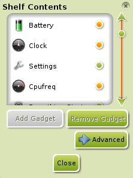

[click on any image to enlarge]
This section combines the guides for Shelves & gadgets because of their symbiotic relationship.Shelves
Shelves in Enlightenment (E17) are similar to the “Panels" used in other environments like Gnome, LXDE, and KDE. Their primary purpose is to house gadgets.
The default Shelf will contain different gadgets depending on which Profile is selected, but some common ones are: Start, Taskbar, Systray, Clock, and so on. It is possible to add more gadgets. It is also possible to use the shelf as a “dock", with a little help from the Gadget named iBar (covered below in the gadgets section). Also, it is possible to have more than one Shelf.
{kind=link}
Add a new Shelf
To add a new Shelf, choose Main Menu>Desktop>Shelves>Add A Shelf. A new shelf will appear at the middle of the left edge of the screen.
Configure the Shelf
You can configure the Shelf with a graphical user interface: right-click on the Shelf, then select Shelf>Settings.
{kind=link}
Stacking
This tab contains settings to define whether the Shelf will stay below or above other windows and whether other windows will be allowed to cover it.
Important: If the Shelf contains a Systray Gadget the Shelf must be "Above Everything".
Position
Here you can choose in which corner or on which edge of the screen the Shelf will be located.
Size
Here you can choose the size of the Shelf and define if it will shrink to the content width or will be stretched at one edge.
Style
This setting allows you to select whether the Shelf is visible or invisible.
Auto Hide
If you want the Shelf to hide behind an edge when you don't use it you have to check the option Auto-hide the Shelf. You can also choose the hide/view behavior of the shelf. It is recommended that you choose the option Above All at the tab Stacking if you use the autohide option.
Desktop
This tab lets you determine whether the Shelf appears on all Virtual Desktops or only on certain ones.
Gadgets
A Gadget is just about anything you see on the desktop. gadgets are what other operating systems call "Applets" or "Widgets". They are small programs that do one thing and do it well. Some provide specific information about your PC or your environment.
This section describes some useful gadgets, shows how to add new gadgets from E17's repertory, and briefly notes how gadgets relate to Modules (which are the subject of a separate page of this guide). Several gadgets are probably on your default Bodhi Linux desktop, depending on which Profile you selected when you installed Bodhi Linux.
Note that most gadgets can be placed either directly on the desktop or onto a Shelf. There are a few gadgets (like Systray) that can only be placed on a Shelf.
Examples of Gadgets
{kind=link}
{kind=link}
{kind=link}
Adding New Gadgets To The Desktop
{kind=link}
{kind=link}
There are multiple methos to add gadgets to the desktop.
The most common methods are:
1. Go to Main Menu>Desktop>Change Gadgets.
Select the Gadget from the list that you wish to add.
Then click Add Gadget. This is the simplest and easiest.
2. Go to Main Menu>Settings>Gadgets and the
Gadgets Manager will open, with the
Layers tab selected. The
Background option puts a visible gadget on
the desktop (the Hover (Key Toggle) option
is beyond the scope of the Guide). Select the
Background option, then click the
Configure Layer button at the bottom of the
Gadgets Manager. This opens the
Desktop Gadgets pop-up, as in the first method. Select a
Gadget from the list, and press
Add Gadget.
In both cases, the Gadget
appears at the top left of the desktop with a crosshatching,
indicating it can be moved and resized to your requirements.
When the Gadget is in the proper place,
right-click the Gadget to lock it.
Gadget Settings
Once they are placed on the desktop or on a Shelf, each Gadget can be right-clicked to configure its appearance and its behavior. For example, when you first install the Forecasts Gadget, it gives you the weather for Sofia, Bulgaria. Probably not what you want, unless, of course, you live there. So right-click it, and navigate to Gadget Forecasts>Forecasts Settings . In the dialog box that appears, you will see instructions for finding and entering the code for your city.

{kind=link}
Add a Gadget to a Shelf
Adding a Gadget to a Shelf requires a slightly different procedure.
You can add new gadgets if you right-click on the Shelf then select Shelf>Contents. Now you can choose the Gadget you want on your Shelf and click Add Gadget.
Right-click on the Gadget to change to a mode where you can move and resize it. After doing this you should right-click again and choose the option to lock the Gadget's size and location.
*Note: The Systray gadget can only have one instance loaded, in total.
Dock via iBar
You can make a dock out of an E17 shelf. To do this add the Gadget iBar, then add new icons to it. A Right-click on the Gadget shows the submenu Gadget iBar. There you can add your own app starter via Create new Icon or use predefined app starters with Contents. In Settings and Look you can define its design.
Gadgets Need Their Modules
What gadgets you have available to add is determined by what Modules you have Loaded. Loading a Module reads it from disk storage and places it in RAM, but it won't be displayed on screen until you add it as a Gadget to the desktop or a Shelf. To Load/Unload Modules go to Main Menu>Settings>Modules. See the Modules Section of this Guide for more details.
Still More Gadgets
To keep the initial download and installation of Bodhi Linux as compact as possible, some excellent Modules were not included, but can be downloaded and installed via the Synaptic Package Manager just like other Linux programs.
For a full list of available gadgets check the Module Reference. See the Modules Section of this Guide for more details on Modules.